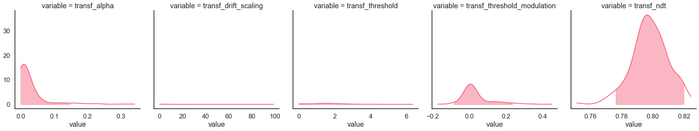
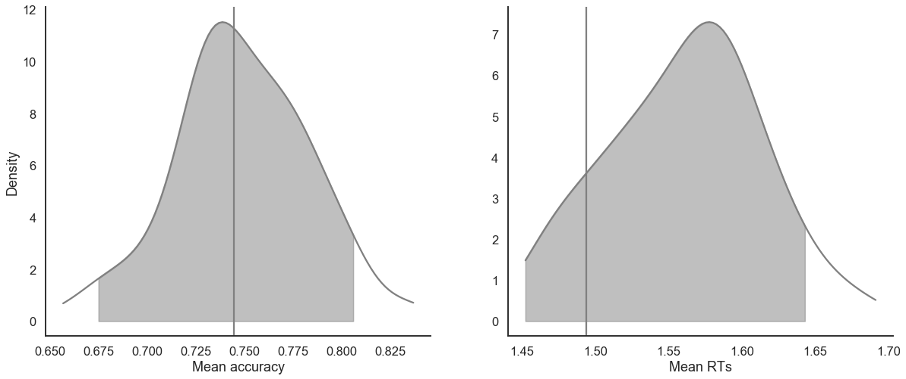
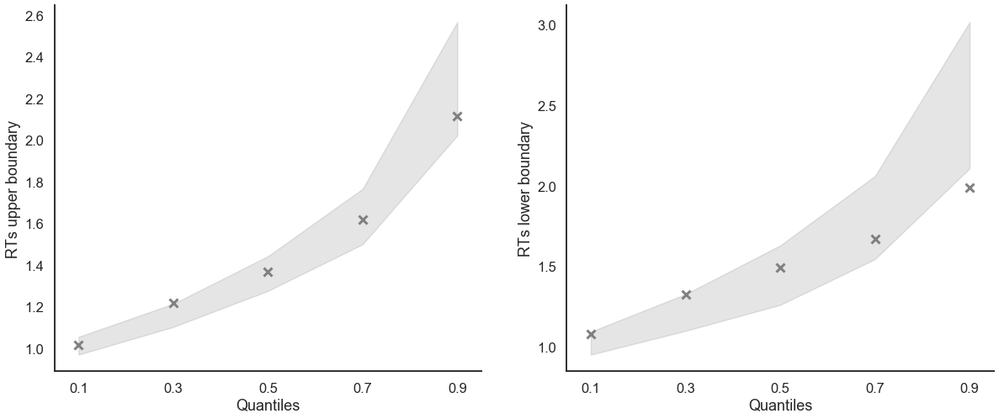
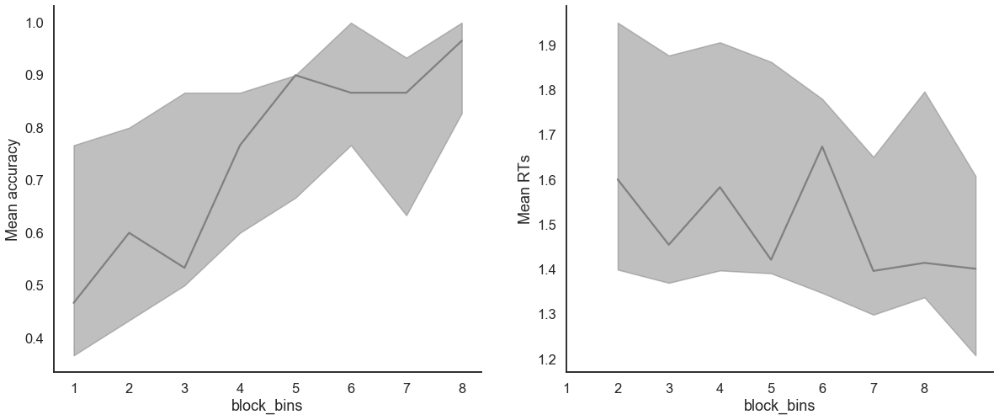
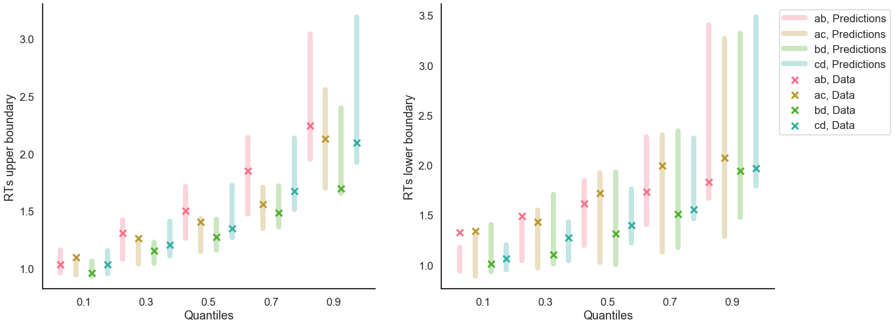

[1]:
import rlssm
import pandas as pd
import os
/Users/Khamir/opt/anaconda3/lib/python3.7/site-packages/statsmodels/tools/_testing.py:19: FutureWarning: pandas.util.testing is deprecated. Use the functions in the public API at pandas.testing instead.
import pandas.util.testing as tm
Import the grouped data¶
[2]:
par_path = os.path.abspath(os.path.join(os.getcwd(), os.pardir))
data_path = os.path.join(par_path, 'data/data_experiment.csv')
data = pd.read_csv(data_path, index_col=0)
data = data[data.participant == 10].reset_index(drop=True)
data['block_label'] += 1
data.head()
INFO:numexpr.utils:NumExpr defaulting to 4 threads.
[2]:
| participant | block_label | trial_block | f_cor | f_inc | cor_option | inc_option | times_seen | rt | accuracy | |
|---|---|---|---|---|---|---|---|---|---|---|
| 0 | 10 | 1.0 | 1.0 | 61.0 | 52.0 | 4 | 3 | 1.0 | 1.285418 | 0.0 |
| 1 | 10 | 1.0 | 2.0 | 54.0 | 37.0 | 4 | 2 | 1.5 | 1.577622 | 0.0 |
| 2 | 10 | 1.0 | 3.0 | 51.0 | 51.0 | 4 | 3 | 2.5 | 1.564731 | 0.0 |
| 3 | 10 | 1.0 | 4.0 | 50.0 | 35.0 | 3 | 1 | 2.0 | 1.217245 | 1.0 |
| 4 | 10 | 1.0 | 5.0 | 59.0 | 50.0 | 4 | 2 | 3.0 | 1.929781 | 0.0 |
Initialise the model¶
[3]:
model = rlssm.RLDDModel(hierarchical_levels=1, threshold_modulation=True)
Using cached StanModel
[4]:
model.family, model.model_label, model.hierarchical_levels
[4]:
('RLDDM', 'RLDDM_thrmod', 1)
Fit¶
[5]:
# sampling parameters
n_iter = 1000
n_chains = 2
n_thin = 5
# learning parameters
K = 4 # n options
initial_value_learning = 27.5 # intitial value (Q0)
# bayesian model
alpha_priors = None
drift_scaling_priors = None
threshold_priors = None
ndt_priors = None
[6]:
model_fit = model.fit(
data,
K,
initial_value_learning,
alpha_priors=alpha_priors,
drift_scaling_priors=drift_scaling_priors,
threshold_priors=threshold_priors,
ndt_priors=ndt_priors,
thin = n_thin,
iter = n_iter,
chains = n_chains)
WARNING:pystan:Maximum (flat) parameter count (1000) exceeded: skipping diagnostic tests for n_eff and Rhat.
To run all diagnostics call pystan.check_hmc_diagnostics(fit)
WARNING:pystan:1 of 200 iterations ended with a divergence (0.5 %).
WARNING:pystan:Try running with adapt_delta larger than 0.8 to remove the divergences.
WARNING:pystan:2 of 200 iterations saturated the maximum tree depth of 10 (1 %)
WARNING:pystan:Run again with max_treedepth larger than 10 to avoid saturation
Checks MCMC diagnostics:
n_eff / iter looks reasonable for all parameters
1.0 of 200 iterations ended with a divergence (0.5%)
Try running with larger adapt_delta to remove the divergences
2 of 200 iterations saturated the maximum tree depth of 10 (1.0%)
Run again with max_depth set to a larger value to avoid saturation
E-BFMI indicated no pathological behavior
get Rhat¶
[7]:
model_fit.rhat.describe()
[7]:
| rhat | |
|---|---|
| count | 5.000000 |
| mean | 1.028381 |
| std | 0.036323 |
| min | 1.004573 |
| 25% | 1.006443 |
| 50% | 1.018795 |
| 75% | 1.019944 |
| max | 1.092149 |
[8]:
model_fit.rhat.head()
[8]:
| rhat | variable | |
|---|---|---|
| 0 | 1.092149 | alpha |
| 1 | 1.004573 | drift_scaling |
| 2 | 1.018795 | threshold |
| 3 | 1.019944 | threshold_modulation |
| 4 | 1.006443 | ndt |
get wAIC¶
[9]:
model_fit.waic
[9]:
{'lppd': -222.16681174391903,
'p_waic': 6.836184768666476,
'waic': 458.005993025171,
'waic_se': 28.91574780393356}
Posteriors¶
[10]:
model_fit.samples
[10]:
| chain | draw | transf_alpha | transf_drift_scaling | transf_threshold | transf_threshold_modulation | transf_ndt | |
|---|---|---|---|---|---|---|---|
| 0 | 0 | 90 | 0.007835 | 0.580896 | 1.473735 | 0.016771 | 0.794182 |
| 1 | 0 | 82 | 0.009181 | 0.462339 | 0.980164 | 0.036782 | 0.783744 |
| 2 | 0 | 87 | 0.341199 | 0.081939 | 2.877762 | -0.027583 | 0.801994 |
| 3 | 0 | 73 | 0.007933 | 0.611815 | 0.852093 | 0.041012 | 0.804864 |
| 4 | 0 | 2 | 0.000665 | 5.448041 | 0.043890 | 0.167328 | 0.816205 |
| ... | ... | ... | ... | ... | ... | ... | ... |
| 195 | 1 | 30 | 0.008509 | 0.561498 | 1.341972 | 0.017961 | 0.796638 |
| 196 | 1 | 88 | 0.007199 | 0.518468 | 1.527085 | 0.012908 | 0.799229 |
| 197 | 1 | 41 | 0.017708 | 0.267655 | 1.166507 | 0.026071 | 0.789138 |
| 198 | 1 | 56 | 0.018588 | 0.279397 | 1.253827 | 0.021377 | 0.792802 |
| 199 | 1 | 36 | 0.000175 | 24.410079 | 0.007002 | 0.241110 | 0.810597 |
200 rows × 7 columns
[11]:
model_fit.trial_samples
[11]:
OrderedDict([('drift_t',
array([[0. , 0.15246788, 0.16037587, ..., 2.21165858, 0.59962438,
0.59947765],
[0. , 0.14219334, 0.14937706, ..., 2.00515284, 0.54727393,
0.54649418],
[0. , 0.9365715 , 0.67292939, ..., 1.42915361, 0.47890742,
0.34346227],
...,
[0. , 0.1587738 , 0.16544134, ..., 1.89638161, 0.53550021,
0.53075733],
[0. , 0.17398234, 0.18113531, ..., 2.04484171, 0.57911523,
0.57354397],
[0. , 0.1433067 , 0.15183721, ..., 2.47877035, 0.63976407,
0.64392976]])),
('threshold_t',
array([[1.8465024 , 1.84835636, 1.85116552, ..., 2.0055131 , 1.97165524,
1.97202144],
[1.71883189, 1.7234764 , 1.73051342, ..., 2.10059488, 2.01482796,
2.01555149],
[2.18114613, 2.0426047 , 1.88260247, ..., 1.72074114, 1.92099226,
1.91159799],
...,
[1.70984061, 1.71617902, 1.72573289, ..., 2.07165309, 1.97158099,
1.971604 ],
[1.70602441, 1.71147481, 1.71968344, ..., 2.0053604 , 1.9213143 ,
1.92130085],
[1.84453781, 1.8451337 , 1.8460409 , ..., 1.92039854, 1.90795902,
1.90837967]])),
('ndt_t',
array([[0.79418159, 0.79418159, 0.79418159, ..., 0.79418159, 0.79418159,
0.79418159],
[0.78374388, 0.78374388, 0.78374388, ..., 0.78374388, 0.78374388,
0.78374388],
[0.80199376, 0.80199376, 0.80199376, ..., 0.80199376, 0.80199376,
0.80199376],
...,
[0.7891385 , 0.7891385 , 0.7891385 , ..., 0.7891385 , 0.7891385 ,
0.7891385 ],
[0.7928016 , 0.7928016 , 0.7928016 , ..., 0.7928016 , 0.7928016 ,
0.7928016 ],
[0.81059678, 0.81059678, 0.81059678, ..., 0.81059678, 0.81059678,
0.81059678]]))])
[12]:
import seaborn as sns
sns.set(context = "talk",
style = "white",
palette = "husl",
rc={'figure.figsize':(15, 8)})
[13]:
model_fit.plot_posteriors(height=5, show_intervals='HDI');

Posterior predictives¶
Ungrouped¶
[14]:
pp = model_fit.get_posterior_predictives_df(n_posterior_predictives=100)
pp
[14]:
| variable | rt | ... | accuracy | ||||||||||||||||||
|---|---|---|---|---|---|---|---|---|---|---|---|---|---|---|---|---|---|---|---|---|---|
| trial | 1 | 2 | 3 | 4 | 5 | 6 | 7 | 8 | 9 | 10 | ... | 230 | 231 | 232 | 233 | 234 | 235 | 236 | 237 | 238 | 239 |
| sample | |||||||||||||||||||||
| 1 | 1.247182 | 1.526182 | 1.020182 | 2.642182 | 1.592182 | 1.605182 | 2.787182 | 2.223182 | 1.866182 | 2.880182 | ... | 1.0 | 0.0 | 1.0 | 1.0 | 1.0 | 0.0 | 1.0 | 1.0 | 1.0 | 1.0 |
| 2 | 2.147744 | 2.632744 | 1.300744 | 1.434744 | 0.869744 | 3.048744 | 1.503744 | 2.039744 | 1.173744 | 1.269744 | ... | 1.0 | 1.0 | 1.0 | 1.0 | 1.0 | 0.0 | 0.0 | 1.0 | 1.0 | 1.0 |
| 3 | 4.673994 | 1.256994 | 1.634994 | 1.386994 | 2.032994 | 2.066994 | 3.060994 | 3.167994 | 1.129994 | 1.384994 | ... | 1.0 | 1.0 | 1.0 | 0.0 | 1.0 | 1.0 | 0.0 | 1.0 | 1.0 | 0.0 |
| 4 | 1.074864 | 1.449864 | 1.371864 | 1.206864 | 1.613864 | 1.861864 | 1.190864 | 1.097864 | 1.253864 | 1.058864 | ... | 1.0 | 1.0 | 1.0 | 1.0 | 1.0 | 1.0 | 1.0 | 1.0 | 0.0 | 1.0 |
| 5 | 1.059205 | 1.531205 | 2.104205 | 0.978205 | 1.227205 | 1.461205 | 1.057205 | 1.249205 | 1.340205 | 1.571205 | ... | 1.0 | 1.0 | 1.0 | 1.0 | 1.0 | 0.0 | 1.0 | 1.0 | 0.0 | 1.0 |
| ... | ... | ... | ... | ... | ... | ... | ... | ... | ... | ... | ... | ... | ... | ... | ... | ... | ... | ... | ... | ... | ... |
| 96 | 2.790066 | 1.787066 | 6.281066 | 1.464066 | 1.567066 | 2.067066 | 0.920066 | 1.722066 | 1.322066 | 2.176066 | ... | 1.0 | 1.0 | 1.0 | 1.0 | 1.0 | 1.0 | 1.0 | 1.0 | 1.0 | 1.0 |
| 97 | 1.199413 | 1.171413 | 5.427413 | 2.730413 | 2.519413 | 1.103413 | 0.973413 | 0.971413 | 2.536413 | 1.480413 | ... | 1.0 | 1.0 | 1.0 | 1.0 | 1.0 | 1.0 | 1.0 | 1.0 | 1.0 | 0.0 |
| 98 | 1.658040 | 1.191040 | 4.471040 | 1.220040 | 1.757040 | 1.527040 | 2.229040 | 1.184040 | 0.969040 | 6.008040 | ... | 1.0 | 1.0 | 1.0 | 1.0 | 1.0 | 1.0 | 1.0 | 1.0 | 0.0 | 1.0 |
| 99 | 3.160875 | 1.151875 | 2.095875 | 1.736875 | 4.063875 | 0.926875 | 1.552875 | 1.330875 | 1.498875 | 1.248875 | ... | 1.0 | 1.0 | 1.0 | 1.0 | 1.0 | 0.0 | 1.0 | 1.0 | 1.0 | 1.0 |
| 100 | 2.578722 | 1.848722 | 2.088722 | 1.986722 | 3.018722 | 1.566722 | 1.071722 | 1.200722 | 1.438722 | 1.702722 | ... | 1.0 | 1.0 | 1.0 | 1.0 | 1.0 | 0.0 | 1.0 | 1.0 | 1.0 | 1.0 |
100 rows × 478 columns
[ ]:
[15]:
pp_summary = model_fit.get_posterior_predictives_summary(n_posterior_predictives=100)
pp_summary
[15]:
| mean_accuracy | mean_rt | skewness | quant_10_rt_low | quant_30_rt_low | quant_50_rt_low | quant_70_rt_low | quant_90_rt_low | quant_10_rt_up | quant_30_rt_up | quant_50_rt_up | quant_70_rt_up | quant_90_rt_up | |
|---|---|---|---|---|---|---|---|---|---|---|---|---|---|
| sample | |||||||||||||
| 1 | 0.774059 | 1.633617 | 2.922988 | 1.077982 | 1.312582 | 1.570182 | 1.932782 | 2.882182 | 0.987582 | 1.170582 | 1.340182 | 1.694782 | 2.497982 |
| 2 | 0.740586 | 1.722639 | 2.472975 | 1.050144 | 1.244244 | 1.420744 | 1.753944 | 2.421444 | 1.026344 | 1.192344 | 1.459744 | 1.821344 | 2.706544 |
| 3 | 0.736402 | 1.531508 | 2.866300 | 1.023194 | 1.215394 | 1.484994 | 1.817594 | 2.602594 | 0.982494 | 1.140494 | 1.288494 | 1.576994 | 2.182994 |
| 4 | 0.815900 | 1.453069 | 1.930509 | 1.050864 | 1.170364 | 1.283864 | 1.588464 | 1.887564 | 0.988464 | 1.119064 | 1.288864 | 1.578464 | 2.142464 |
| 5 | 0.723849 | 1.523406 | 1.671841 | 1.078205 | 1.205205 | 1.362705 | 1.646205 | 1.966705 | 1.038805 | 1.200405 | 1.372205 | 1.656205 | 2.159605 |
| ... | ... | ... | ... | ... | ... | ... | ... | ... | ... | ... | ... | ... | ... |
| 96 | 0.811715 | 1.526940 | 1.756470 | 1.023266 | 1.213866 | 1.354066 | 1.780666 | 2.268066 | 1.010366 | 1.168866 | 1.409066 | 1.580166 | 2.096366 |
| 97 | 0.736402 | 1.519329 | 2.116428 | 1.056213 | 1.157613 | 1.335413 | 1.625613 | 2.112213 | 1.014913 | 1.138913 | 1.307413 | 1.571413 | 2.318913 |
| 98 | 0.728033 | 1.495031 | 1.459277 | 1.042640 | 1.194040 | 1.341040 | 1.707840 | 2.462640 | 0.996740 | 1.191540 | 1.342040 | 1.616140 | 2.114140 |
| 99 | 0.769874 | 1.562369 | 1.662826 | 1.114675 | 1.339475 | 1.588875 | 1.862275 | 2.415475 | 0.981475 | 1.115875 | 1.316375 | 1.616075 | 2.454475 |
| 100 | 0.765690 | 1.484011 | 2.185689 | 1.002222 | 1.220722 | 1.364722 | 1.592722 | 2.310222 | 1.008722 | 1.142922 | 1.299722 | 1.583722 | 2.126122 |
100 rows × 13 columns
[16]:
model_fit.plot_mean_posterior_predictives(n_posterior_predictives=100, figsize=(20,8), show_intervals='HDI');
[16]:


[17]:
model_fit.plot_quantiles_posterior_predictives(n_posterior_predictives=100, kind='shades');
[17]:


Grouped¶
[18]:
import numpy as np
[19]:
data['choice_pair'] = 'AB'
data.loc[(data.cor_option == 3) & (data.inc_option == 1), 'choice_pair'] = 'AC'
data.loc[(data.cor_option == 4) & (data.inc_option == 2), 'choice_pair'] = 'BD'
data.loc[(data.cor_option == 4) & (data.inc_option == 3), 'choice_pair'] = 'CD'
data['block_bins'] = pd.cut(data.trial_block, 8, labels=np.arange(1, 9))
[20]:
data.head()
[20]:
| index | participant | block_label | trial_block | f_cor | f_inc | cor_option | inc_option | times_seen | rt | accuracy | accuracy_neg | choice_pair | block_bins | |
|---|---|---|---|---|---|---|---|---|---|---|---|---|---|---|
| 0 | 0 | 10 | 1.0 | 1.0 | 61.0 | 52.0 | 4 | 3 | 1.0 | 1.285418 | 0.0 | -1 | CD | 1 |
| 1 | 1 | 10 | 1.0 | 2.0 | 54.0 | 37.0 | 4 | 2 | 1.5 | 1.577622 | 0.0 | -1 | BD | 1 |
| 2 | 2 | 10 | 1.0 | 3.0 | 51.0 | 51.0 | 4 | 3 | 2.5 | 1.564731 | 0.0 | -1 | CD | 1 |
| 3 | 3 | 10 | 1.0 | 4.0 | 50.0 | 35.0 | 3 | 1 | 2.0 | 1.217245 | 1.0 | 1 | AC | 1 |
| 4 | 4 | 10 | 1.0 | 5.0 | 59.0 | 50.0 | 4 | 2 | 3.0 | 1.929781 | 0.0 | -1 | BD | 1 |
[21]:
model_fit.get_grouped_posterior_predictives_summary(
grouping_vars=['block_label', 'choice_pair'],
quantiles=[.3, .5, .7],
n_posterior_predictives=100)
[21]:
| mean_accuracy | mean_rt | skewness | quant_30_rt_low | quant_30_rt_up | quant_50_rt_low | quant_50_rt_up | quant_70_rt_low | quant_70_rt_up | |||
|---|---|---|---|---|---|---|---|---|---|---|---|
| block_label | choice_pair | sample | |||||||||
| 1.0 | AB | 1 | 0.85 | 1.548932 | 1.590068 | 1.445782 | 1.165182 | 1.520182 | 1.366182 | 1.676182 | 1.748382 |
| 2 | 0.50 | 1.345844 | 1.528482 | 1.071844 | 1.210344 | 1.310744 | 1.290744 | 1.533944 | 1.365244 | ||
| 3 | 0.60 | 1.728194 | 0.610079 | 1.396494 | 1.655394 | 1.490994 | 1.776994 | 1.751094 | 1.858094 | ||
| 4 | 0.75 | 1.435564 | 2.433296 | 1.194864 | 1.065664 | 1.206864 | 1.321864 | 1.358864 | 1.540464 | ||
| 5 | 0.60 | 1.383055 | 1.333356 | 1.066805 | 1.068405 | 1.374705 | 1.179205 | 1.621405 | 1.280905 | ||
| ... | ... | ... | ... | ... | ... | ... | ... | ... | ... | ... | ... |
| 3.0 | CD | 96 | 0.50 | 1.486666 | 1.613342 | 1.050566 | 1.276166 | 1.130566 | 1.393066 | 1.212066 | 1.723566 |
| 97 | 0.60 | 1.491613 | 1.463802 | 1.116613 | 1.175913 | 1.268913 | 1.283413 | 1.398713 | 1.850313 | ||
| 98 | 0.55 | 1.651990 | 1.263724 | 1.198840 | 1.416040 | 1.244040 | 1.452040 | 1.535840 | 2.077040 | ||
| 99 | 0.65 | 1.623675 | 1.240336 | 1.435875 | 1.022875 | 1.537875 | 1.258875 | 2.139075 | 1.703875 | ||
| 100 | 0.70 | 1.520122 | 1.162632 | 1.213722 | 1.164322 | 1.403222 | 1.401722 | 1.733722 | 1.501122 |
1200 rows × 9 columns
[22]:
model_fit.get_grouped_posterior_predictives_summary(
grouping_vars=['block_bins'],
quantiles=[.3, .5, .7],
n_posterior_predictives=100)
[22]:
| mean_accuracy | mean_rt | skewness | quant_30_rt_low | quant_30_rt_up | quant_50_rt_low | quant_50_rt_up | quant_70_rt_low | quant_70_rt_up | ||
|---|---|---|---|---|---|---|---|---|---|---|
| block_bins | sample | |||||||||
| 1 | 1 | 0.600000 | 1.508515 | 2.117252 | 1.313682 | 1.241282 | 1.442182 | 1.350682 | 1.686282 | 1.468182 |
| 2 | 0.400000 | 1.901544 | 1.348471 | 1.166744 | 1.484144 | 1.597744 | 1.756244 | 1.953444 | 1.941944 | |
| 3 | 0.566667 | 1.405494 | 1.333816 | 1.074794 | 1.212194 | 1.169994 | 1.316994 | 1.510194 | 1.419594 | |
| 4 | 0.633333 | 1.743631 | 1.569563 | 1.199864 | 1.351664 | 1.525864 | 1.499864 | 1.850864 | 1.791864 | |
| 5 | 0.866667 | 1.604572 | 0.948129 | 1.627305 | 1.141205 | 1.664205 | 1.427205 | 1.761705 | 1.708705 | |
| ... | ... | ... | ... | ... | ... | ... | ... | ... | ... | ... |
| 8 | 96 | 0.965517 | 1.418755 | 1.902007 | 1.172066 | 1.059766 | 1.172066 | 1.158066 | 1.172066 | 1.480666 |
| 97 | 0.931034 | 1.475309 | 2.172983 | 1.478113 | 1.043213 | 1.719913 | 1.199413 | 1.961713 | 1.590813 | |
| 98 | 0.896552 | 1.366902 | 1.859199 | 1.033240 | 1.062540 | 1.108040 | 1.187540 | 1.406440 | 1.434040 | |
| 99 | 0.931034 | 1.289737 | 1.540991 | 1.981175 | 1.048075 | 2.069375 | 1.090875 | 2.157575 | 1.324075 | |
| 100 | 0.862069 | 1.397239 | 1.346749 | 1.136022 | 1.101522 | 1.226222 | 1.294722 | 1.388722 | 1.442522 |
800 rows × 9 columns
[23]:
model_fit.plot_mean_grouped_posterior_predictives(grouping_vars=['block_bins'],
n_posterior_predictives=100,
figsize=(20,8));

[24]:
model_fit.plot_quantiles_grouped_posterior_predictives(n_posterior_predictives=100,
grouping_var='choice_pair',
kind='shades',
quantiles=[.1, .3, .5, .7, .9]);

[25]:
model_fit.plot_quantiles_grouped_posterior_predictives(
n_posterior_predictives=300,
grouping_var='choice_pair',
palette = sns.color_palette('husl'),
intervals_kws={'alpha': .3, 'lw':8},
hue_order=['AB', 'AC', 'BD', 'CD'],
hue_labels=['ab', 'ac', 'bd', 'cd']);
/Users/Khamir/DecisionMaking/_Reports/_7/rlssm/rlssm/fits_DDM.py:228: UserWarning: Cannot have more posterior predictive samples than posterior samples. Will continue with n_posterior_predictives=200
pp_rt, pp_acc = self.get_posterior_predictives(n_posterior_predictives, **kwargs)

Get starting values for further sampling¶
[27]:
sv = model_fit.last_values
sv
[27]:
| chain | draw | warmup | alpha | drift_scaling | ndt | threshold | threshold_modulation | |
|---|---|---|---|---|---|---|---|---|
| 99 | 0 | 99 | 0 | -1.097764 | -2.414710 | 0.201796 | 2.463731 | -0.017077 |
| 199 | 1 | 99 | 0 | -3.267924 | 6.322537 | 0.203787 | 3.941800 | -0.080251 |
[ ]: